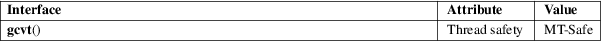

gcvt − convert a floating-point number to a string
Standard C library (libc, −lc)
#include <stdlib.h>
char *gcvt(double number, int ndigit, char *buf);
Feature Test Macro Requirements for glibc (see feature_test_macros(7)):
gcvt():
Since glibc 2.17
(_XOPEN_SOURCE >= 500 && ! (_POSIX_C_SOURCE >=
200809L))
|| /* glibc >= 2.20 */ _DEFAULT_SOURCE
|| /* glibc <= 2.19 */ _SVID_SOURCE
glibc 2.12 to glibc 2.16:
(_XOPEN_SOURCE >= 500 && ! (_POSIX_C_SOURCE >=
200112L))
|| _SVID_SOURCE
Before glibc 2.12:
_SVID_SOURCE || _XOPEN_SOURCE >= 500
The gcvt() function converts number to a minimal length null-terminated ASCII string and stores the result in buf. It produces ndigit significant digits in either printf(3) F format or E format.
The gcvt() function returns buf.
For an explanation of the terms used in this section, see attributes(7).

None.
Marked as LEGACY in POSIX.1-2001. POSIX.1-2008 removed it, recommending the use of sprintf(3) instead (though snprintf(3) may be preferable).
ecvt(3), fcvt(3), sprintf(3)